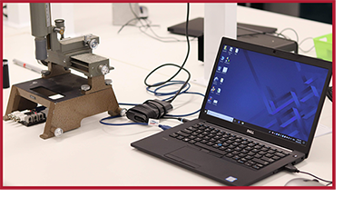
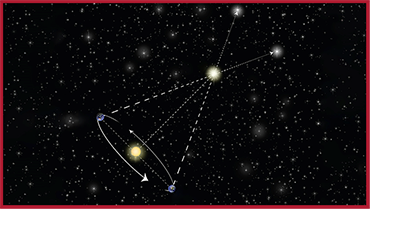
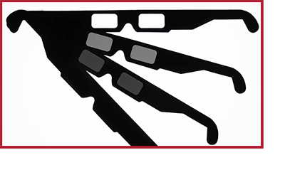
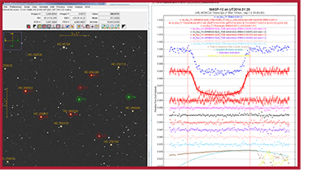

| Activities |
Red, Green or Blue, which scatters more for you?
Red, Green or Blue, which scatters more for you? is an atmospheric exitingion activity. In this activity, students will investigate the properties of atmospheric extinction due to Rayleigh scattering Designed for students grade 8 to 12, the activity can be conducted in a physics lab and takes approximately 45 minutes to complete. [Activity]
Measuring Distance Using Parallax
Measuring Distance Using Parallax is a trigonmetric parallax activity. In this activity, students will perform a measurment using the trigonometric parallax method. Designed for students grade 8 to 12, the activity has both an outdoor and indoor component and takes approximately 60 minutes to complete. [Activity]
The Polarisation of Light
The Polarisation of Light is a linear polarisation activity. In this activity, a source of polarised light, a polariser, and a smartphone are used to investigate Malus' Law of polarisation. Designed for students grade 6 to 12, the activity can be conducted indoors and takes approximately 30 minutes to complete. [Activity]
The Hunt For New Worlds: Exoplanets
The Hunt For New Worlds is a transiting exoplanet activity. In this activity, students will plot and characterise the light curve from an exoplanet transit event by way of differential photometry analysis. Designed for students grade 8 to 12, the activity can be conducted indoors and takes approximately 45 minutes to complete. [Activity]